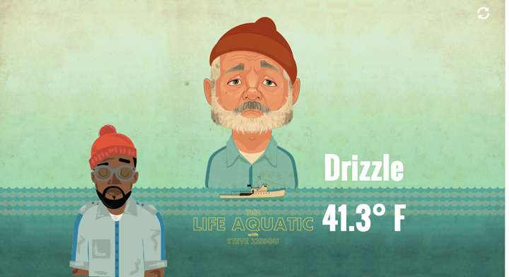
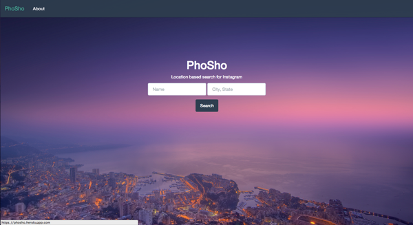
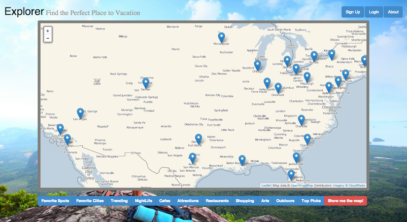

<!doctype html>
<html class="no-js" lang="en">
  <head>
    <meta charset="utf-8" />
    <meta name="viewport" content="width=device-width, initial-scale=1.0" />
    <title>Jamal | Welcome</title>
    <link rel="stylesheet" href="css/foundation.css" />
    <link rel="stylesheet" href="css/style.css" />
    <link rel="stylesheet" href="css/media.css" />
    <link rel="stylesheet" href="css/foundation-icons.css" />
    <link rel="stylesheet" href="css/animate.css" />
    <script src="js/modernizr.js"></script>
  </head>
  <body>
    <script type="text/x-handlebars">
    <div class="page">
     <div class="off-canvas-wrap">
      <div class="inner-wrap">
        <nav class="tab-bar">
          <section class="left-small pulse">
            <a class="left-off-canvas-toggle menu-icon" ><span></span></a>
          </section>
          <section class="middle tab-bar-section">
            <h1 class="title">Jamal</h1>
          </section>
        </nav>
        <aside class="left-off-canvas-menu">
        <ul class="off-canvas-list">
          <li><label>Menu</label></li>
          <li>{{#link-to 'index'}} Home {{/link-to}}</li>
          <li>{{#link-to 'work'}} Work {{/link-to}}</li>
          <li>{{#link-to 'resume'}} Resume {{/link-to}}</li>
          <li>{{#link-to 'about'}} About {{/link-to}}</li>
          <li>{{#link-to 'contact'}} Contact {{/link-to}}</li>
        </ul>
        </aside>
        <section class="main-section">
        </section>
        <a class="exit-off-canvas"></a>
          {{outlet}}
        </div>
      </div>
    </div>
    </script>

    <script type="text/x-handlebars" data-template-name="_index">
      <div class="row">
        <div class='container large-6 columns animated fadeInDown'>
          <h1>Hey, I'm Jamal</h1>
          <p class="intro"> Thanks for stopping by. <br / >
          I'm a Web Developer, tech enthusiast, hiker & hugger.
          I work to make the world fun, beautiful & connected. I am a graduate of General Assembly's Web Development Immersive course.  Look around, click everything and shoot me an email when you're done!
          </p>
        </div>
        <div class="large-6 columns photo" id="me">
          
        </div>
      </div>
    </script>
    <script type="text/x-handlebars" data-template-name="_work">

    <div class="row">
      <div class="large-12 columns">
        <div class="photo3-container">
          <a href="http://www.weatheranderson.com" target="_blank"></a>
          <p>Kanye Wes Anderson here to give you the weather and some tunes to jam to. Weather Anderson is a weather app with a built in Spotify player set to Yeezy.</p>
        </div>
      </div>
    </div>
      <div class="row">
        <div class="large-6 columns">
          <div class='photo1-container'>
            </img>
            <a href="https://phosho.herokuapp.com/" target="_blank"><h2 class="link" style="text-align: center">Places</h2></a>
            <p>Places is my first project.  You can search any venue in the world with its corresponding location and Places will display the most recent photos or videos taken there.  The photos all come from instagram.
            You can check out and fork the code on <a href="http://www.github.com/jamalp/places" target="_blank">Github</a>. Feel free to <a href="mailto:jamalkpowell@gmail.com?subject=Places">email</a> me with any suggestions, ideas or questions.</p>
          </div>
        </div>
        <div class="large-6 columns">
          <div class='photo2-container'>
            </img>
            <a href="http://thawing-hamlet-5984.herokuapp.com/" target="_blank"><h2 class="link" style="text-align: center">Explorer</h2></a>
            <p>
            Explorer is a map to help you find the best hotels to stay while on vacation.  Use Explorer to <em>explore</em> your surroundings based on the things that interest you and find hotels located in those areas.  Explorer was created, built and cared for by <a href="mailto:tim.blonski@gmail.com?subject=Explorer">Tim Blonski</a> & <a href="mailto:jamalkpowell@gmail.com?subject=Explorer">Jamal Powell</a>. Email us with suggestions, advice and find us on <a href="http://www.github.com/jamalp/explorer" target="_blank">Github</a>! <br>Happy Exploring.
            </p>
          </div>
        </div>
      </div>
    </script>

    <script type="text/x-handlebars" data-template-name="resume">
      <div class="row">
          <div class="large-12 columns">
            <h1>Jamal Powell</h1>
            <span>17 Essex St., New York, NY 10002 &bull; (808)382-0417 &bull; Jamalkpowell@Gmail.com &bull; www.Github.com/Jamalp</span>
          </div>
        </div>
        <div class="row">
        <div class="large-12 columns">
            <h2>About Me</h2>
          <div class="resume-about">
            <p>
            I moved to New York a little over a year ago to make a career change into Web Development. I am a graduate of General Assembly’s 3-month Web Development Immersive Program, where I am also currently teaching a Ruby on Rails course. I’ve been coding ever since.
            </p>
          </div>

          </div>
        </div>
        <div class="row">
          <h2 class="large-12 columns">Education</h2>
        </div>
        <div class="row">
          <div class="large-4 columns">
            <h4>General Assembly - June 2013</h4>
            <p>Web Development Immersive</p>
          </div>
          <div class="large-4 columns">
            <h4>Pace University : July 2012</h4>
            <p>Bachelor of Business Administration</p>
            </div>
          <div class="large-4 columns">
            <h4>University of Hawaii : 2010 - 2012</h4>
            <p>Bachelor of Business Administration</p>
          </div>
        </div>

        <div class="row">
          <h2 class="large-12 columns">Experience</h2>
          <div class="large-6 columns">
            <h4>General Assembly</h4>
            <p>Developer In Residence: September 2013 - Present</p>
          </div>
          <div class="large-6 columns">
            <h4>Eventava</h4>
            <p>Junior Developer: September 2013 - December 2013</p>
          </div>
        </div>
        <div class="row">
          <div class="large-12 columns">
            <h2>Skills</h2>
            <p>HTML5, CSS, Javascript, Jquery, Ruby, Ruby on Rails, Postgresql, AJAX, Backbone & Angular JS</p>
          </div>
        </div>

        <div class="row">
          <div class="large-12 columns">
            <h2>Projects</h2>
          </div>
          <div class="large-12 columns">
            <ul>
              <li>Places: A web app that displays instagram photos of your favorite locations.</li>
              <li>Explorer: An online map that aggregates Foursquare and Yelp to show you what to do and where to go.</li>
            </ul>
          </div>
        </div>
    </script>

    <script type="text/x-handlebars" data-template-name="_about">
      <div class="row">
        <h1 class="large-12 columns">About</h1>
      </div>
      <div class="about">
        <div class="about-content fade">
          <div class="row">
          <p class="large-6 columns">I’ve worked through all sorts of jobs and titles in many different industries before I started my wild and awesome journey into web development and the amazing tech scene here in New York City.  I knew I was hooked when “nerding out” started to sound more fun a night out.  I’ve always been really into technology and design but never really had a real outlet for it.
          </p>
          <p class="large-6 columns">I started my professional career in web development in June at General Assembly.  I was blessed enough at that time in my life to be a part of their Web Development Immersive program, which really opened doors for me and gave me the kick I needed.  I spent 3 months hacking all day, everyday. 3 months of staring bewildered at documentation, searching for missing semi-colons and drinking more coffee than I have in my 26 years on this earth.
          </p>
          </div>
          <div class="row">
            <div>
            <p class="large-6 columns">Deep down I’m an entrepreneur, and I have a couple of side projects that keep my creativity alive. I have a notebook full of sketches, ideas and concepts and am always poking my head into new ventures.  Currently I’m working on a site to showcase and promote a music event a couple of friends are throwing in 2014.
            </p>
            <p class="large-6 columns">Awesome friends, an amazing girlfriend and constant exploration occupy my free time.  I moved to New York from Honolulu in June of 2012 and have been loving every moment of it (except the winters!).  I’m an aspiring everything as I’m insanely curious about every little thing, right now cooking & food are my passions. My bucket list is enormous but traveling is definitely up there, I’ve been to a few of the countries on the top of my list but theres so much more. So don’t call me on holidays, we all have to turn off sometime.
            </p>
            </div>
          </div>
        </div>
      </div>
    </script>

    <script type="text/x-handlebars" data-template-name="_contact">
      <div class="row">
        <h1 class="phone large-2 columns animated hinge">for a good time</h1>
      </div>
      <div class="row">
        <div class="contact-container">
          <div class="icons">
            <a href="mailto:jamalkpowell@gmail.com?subject=Hey"><i class="large-4 columns fi-mail"><span id="social-1"> Email</span></i></a>
            <a href="http://www.github.com/Jamalp" target="_blank"><i class="large-4 columns fi-social-github"><span id="social-2">Github</span></i></a>
            <a href="http://www.twitter.com/jamalpowell" target="_blank"><i class="large-4 columns fi-social-twitter"><span id="social-3">Twitter</span></i></a>
            <a href="http://www.instagram.com/jamalpowell" target="_blank"><i class="large-4 columns fi-social-instagram"><span id="social-4">Instagram</span></i></a>
          </div>
        </div>
      </div>
    </script>


    <script src="js/underscore.js"></script>
    <script src="js/jquery.js"></script>
    <script src="js/vendor/fastclick.js"></script>
    <script src="js/foundation.min.js"></script>
    <script src="js/handlebars.js"></script>
    <script src="js/ember.min.js"></script>
    <script src="js/main.js"></script>
    <script>
      $(document).foundation();
    </script>
  </body>
</html>
